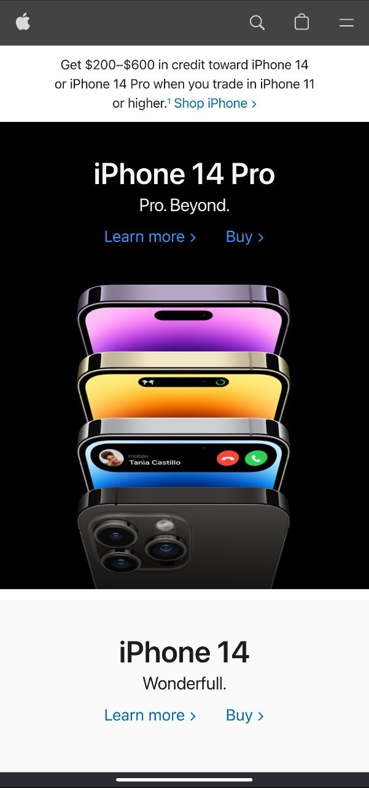

Contrast
Github
Github uses a combination of white and dark gray as the primary colors for its background and text, respectively. This creates a high contrast between the foreground and background, making the content more legible.
Repetition
Dropbox
The website has a consistent layout that is repeated across different pages. For example, the main navigation menu is placed at the top of the page on every page, and the footer contains the same information on every page
Proximity
Apple

Apple's website is designed with a grid-based layout that groups related content together. For example, the products are organized in a grid pattern with consistent spacing between them, making it easy for users to compare and contrast different products